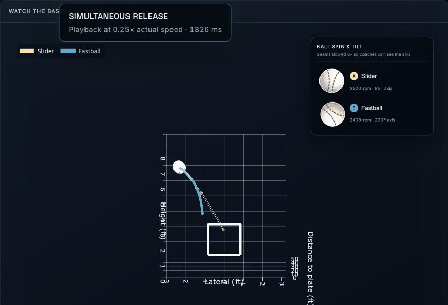
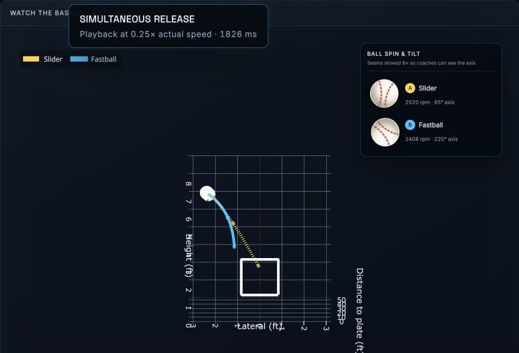
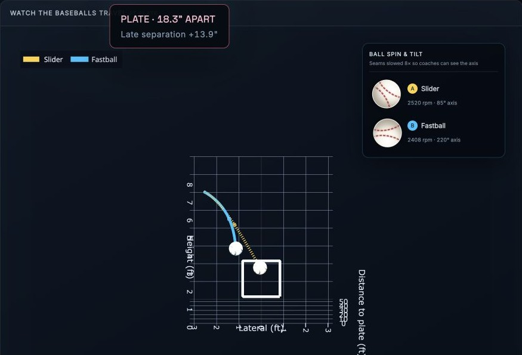
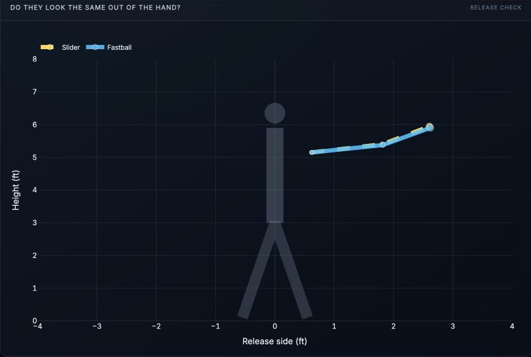
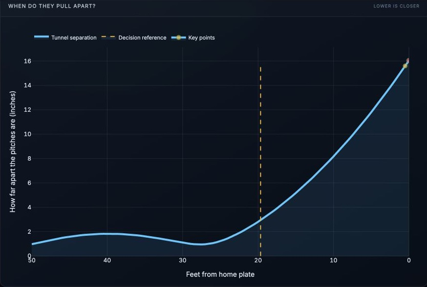
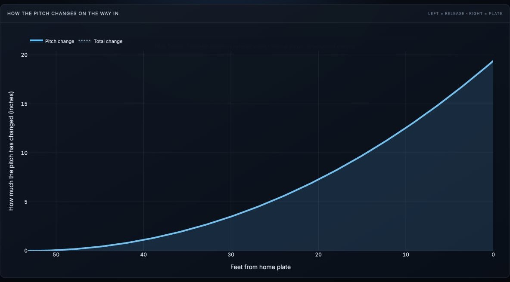
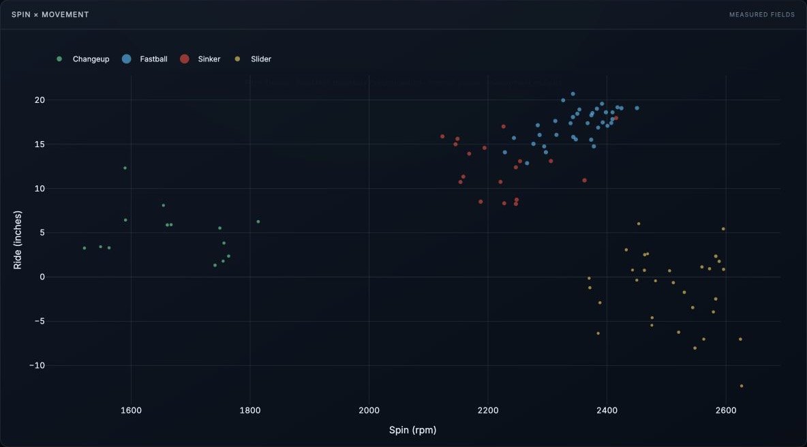

Pitch-flight analysis / player development
Butler Pitch Tunnel
A coach-facing way to compare two real pitches from release through the hitter’s decision and into the plate.

The question
Do they look alike long enough?
The selected slider and fastball start from nearly the same release, remain close around the hitter’s decision, and finish 18.3 inches apart.
Rather than grading an arsenal in the abstract, the tool reconstructs actual individual TrackMan trajectories and lets the coach inspect the exact pair.
Measured flight timing, release geometry, separation, pitch shape, spin, game changes, and coach notes provide context for the visual result.
Behind the zone
Watch the break develop toward the plate.
The camera stays directly behind the strike zone, keeping the complete path, both baseballs, and the late separation in one view.



Supporting evidence
Why the pair works.
Release, separation, shape, and spin views explain the flight instead of asking the animation to stand alone.



